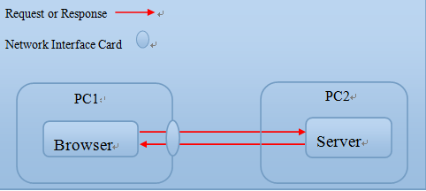
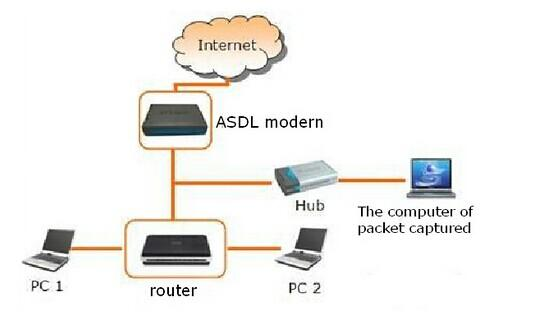

Lab 4: AuthenticationLab OverviewIn this lab, you'll explore authentication. The key problem that authentication addresses is that how to identify the identity of a user. Think online banking system, on which many users are registered. When some user A is transferring money from her account into another user B's account, how does the online banking system know whether this is the real user A, but not some other (malicious) user C who is in the disguise of A. At first glance, this problem is trivial, for the server can ask the user to input password and check the password to guarantee that this is the correct user, however, the problem will get complicated by the fact that the network packet can be sniffed.To make the discussion concrete, you will do this lab for a new version Touchstone web server. The new server contains a very simple online banking system. Any user can transfer some money into another user's account. However, this server contains severe bugs, which presents the fact that without correct and reliable authentication, a malicious user M can transfer money from any user account into her own account. Next, you'll try to implement some form of more strong authentication system to enhance the server: say, you can add cookies to your server, or you can use some encrypt algorithms to protect sensitive data during data transmission over network. In a summary, this lab is open-ended, and you can abuse you freedom to present your own design and implement them. Nevertheless to say, the bottom line is that you can guarantee that your solution is feasible. This lab consists of three parts:
Lab EnvironmentDownload lab 4 code to start with. Build and run the Touchstone server:
$ make
Open your browser and go to this URL
http://127.0.0.1, you will get a web page. Contact
us, if you do not get this page.
Part A: Identity ForgeryThere is a new service in the Touchstone web server: the transfer service. You can first register an account in the server and log in. You can now find the account page which will present the transferring interface, along with user name, login time, among other things.Bugs in the Transfer ServiceThe utility here is that some account (after logging) can transfer money from her own account to another account, just like the real bank business. Read the server's source code:handle.c, and familiarize yourself
with the code that the server is executing, when
one account is transferring. (Pay special attention
to the functions handlePost() and
handlePostTransfer().)
Exercise 1.
There are many bugs and vulnerabilities in the current
utility for transferring money. Find as many bugs as you can. For now, just
focus on bugs that an adversary can trigger by giving unanticipated
values to the transfer page. Think carefully about what kinds of
inputs an attacker might provide, and try them out by entering them
on the transfer page. Please write
down detail descriptions of your observation in Exercise 2. Fix as many bugs as you can, from those you found above. Just keep your code as clean as possible. Also don't forget to test your implementation after you fix the bugs. Identify ForgeryAs you may have noticed, when you transfer money, you should fill in the reciever, the currency amount. However, you don't need to claim who you are. So how does the server know your identify, even though you've logged in.Exercise 3. Read the source code of the login web page (in your browser), and the server's source code. Make sure that you make it clear that how the server identify who is transferring.
To this point, it should be clear to us that we can
fool the server. That is: if we can construct
a fake Exercise 4.
Try to construct a POST / HTTP/1.1 from=Alice&to=Bob&money=100 CookieUp to now, you can understand that if very dangerous to use the account name as the user's identify. So we will introduce you another method: the cookie. Cookie is a small piece of data sent from a website to a user and stored in a user's web browser, while the user is browsing that website. Every time the user loads the website, the browser sends the cookie (automatically) back to the server to notify the website of the user's previous activity. Cookies were designed to be a reliable mechanism for websites to remember state information (such as items in a shopping cart) or to record the user's browsing activity (including clicking particular buttons, logging in, or recording which pages were visited by the user as far back as months or years ago).
In this lab, you will design and implement a simple
form of cookie to identify different users. Your cookie will
work as follows (here, we suppose that you are using
some browser, say IE, Firefox, or Chrome. If you are
using your own browser, say
set-cookie: value in the header of response.
Exercise 5.
Locate the code which handles the post request in Part B: Packet SniffingThe request sending by the browser will be transmitted through the network in form of packets, before reaching the server. As the packet is encoded in plain text, so it not hard for some adversary to peek the content packet, this is often called packet sniffing. If the packet contains some sensitive information, such as the username, password, or cookie, the adversary can steal such information and do evil. In this part of lab, you will explore how this can happen in practice and realize the threat.To do this, you will be using some tools for packet sniffing, one of such popular tools are wireshark (formerly Ethereal). The network packet analysis software functionality in wireshark includes, but not limited to, network packet capture, analysis and modification, etc.. Wireshark use WinPCAP as an interface directly with the card for data exchange packets.
Your job here is to use

Exercise 6.
Using the The above exercise is a little bit ideal, for that in real world, no one will allow you to install wireshark on her machine and sniff the packets. However, one attacker can create more complex environment to achieve her goal, one sample technique is the ARP Attack. Even, you can set up a Local Area Network (LAN) for fishing, just as the following figure shows. In fact, wifi fishing has becoming more and more popular in recent years.

Challenge! According the above description, you can use any one way to sniff the sensitive packets from the victim, and do something interesting. (Nevertheless to say, this is illegal in practice, so you can only do this for study purpose.) Part C: EncryptionEncryption is the standard way to protect sensitive information from leaking. Encryption itself does not prevent interception, but denies the message content to the interceptor. In this part of the lab, you will explore how to use encryption to protect the packets.To make things as simple as possible, we recommend you to use some symmetric-key algorithms, though you are free to choose any strategy you prefer. Symmetric-key algorithms use the same cryptographic keys for both encryption of plaintext and decryption of ciphertext. The keys may be identical or there may be a simple transformation to go between the two keys. The keys, in practice, represent a shared secret between two or more parties that can be used to maintain a private information link. This requirement that both parties have access to the secret key is one of the main drawbacks of symmetric key encryption, in comparison to public-key encryption. Exercise 7.
Encrypt the cookie. You should modify as least
these files: Asymmetric cryptography now becomes the de-facto algorithms now. And it's more secure. Challenge! Implement asymmetric encryption in the Touchstone. For example: change the algorithm to RSA, or DSA, you can refer PGP and SSL for more details. HandinThis completes the lab. Remember to hand in your solution to the information system. |